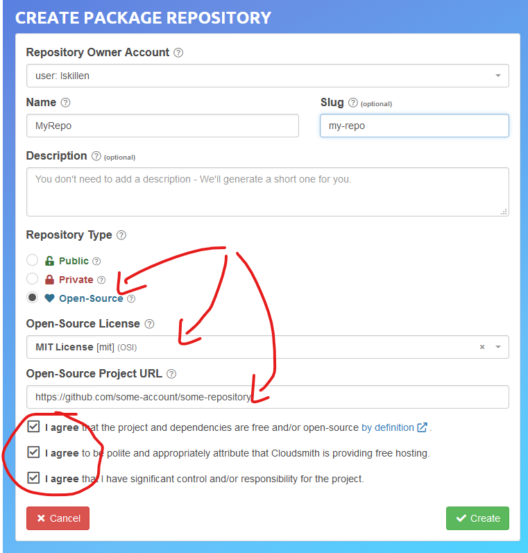

Cloudsmith Deployment Configuration
Personal Organization - Public Opensource Repository
Create your own CLOUDSMITH Deployment Repository. The Testplugin Template uses cloudsmith.io. This is not a requirement in any way, but this is how to get the template setup working.
Setup a Cloudsmith.IO Free Opensource Account:
Go to Cloudsmith.io https://cloudsmith.io/user/signup/ to sign up for a free opensource account using your github account.
After the 7 day trial, you may be asked for credit card, as long as you stay public opensource with the base services, it should not cost you. Don’t get alarmed when it looks like they want money. Open-source repos are free.
-
Create [user name] For Example: "firstname-lastname"
-
Create a [new repository] by clicking the "+" and then use one of the names above.
-
Generally don’t touch 'Slug'. But with troubles, make sure you fill in the 'Slug' with exactly the same text as you used in 'Name' or you repository may not work as you expect and debugging is difficult.
-
Make sure you select "Opensource" (not Public) and complete the rest.
Create Open-source repositories
In your Cloudsmith Account configure your personal repository with the required pre-configured repository names necessary for the template being used (Shipdriver or Testplugin).
Use the "+ in the upper right to configure a new repository. Enter the following for a Public OpenSource Repository:
Name: Enter the name of the repository Slug: Leave alone. Automatically completed. Description: Leave Blank at first Repository Type: Open-Source Open-Source License: Select correct License (Opencpn is generally GPL v3) Open-Source Project URL: Enter (Generally use opencpn.org) Agree to the 3 items. Click "Create"
When completed the new repository should have a "heart" icon which when hovered over shows "Opensource".
For each new repository select:
-
Under "Set me up" dropdown on the right side, select "Raw"
-
Test each repository to make sure you can upload and download a file using the web UI.
-
Then at the bottom "Upload Packages" button.

Testplugin Template Repository Name Configuration
Create 3 repositories named following this guiide:
-
testplugin-alpha or [pluginname]-prod
-
testplugin-beta or [pluginname]-beta
-
testplugin-prod or [pluginname]-alpha
Which will store compressed binary files and metadata xml catalog built by circleci.
Deploy Details more detail on use.
OpenCPN Organization Repositories
Public Open-Source
https://cloudsmith.io/orgs/opencpn/ (Restricted, requires login to be accessed)
Cloudsmith Retention Policy Settings
Example:
-
A repository with 4gb and about 5000 packages used for development.
-
Retention policy set some time ago but these have not disappeared.
-
Deleting them 25 at a time is impractical.
-
Response from Cloudsmith support: This is normally a misunderstanding of how the retention functionality works.
-
Retention Policy only kicks in when a repository is uploaded, even for time-based retention. Also, you’ve currently got "Group Packages By Name" enabled, which means it is is counting per package name, rather than the packages in total.
-
The 33 packages count you have means you’d have to have 34 versions of a named package before it deletes them.
-
If you’d like to keep 30-days worth of absolute packages, just untick the box and we’ll trim it down to 30 days after the next upload.
-
More Information: Cloudsmith Retention: